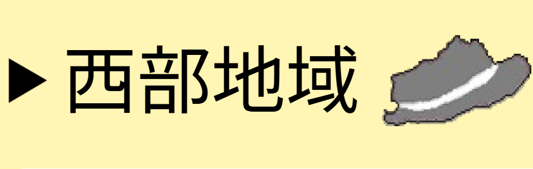
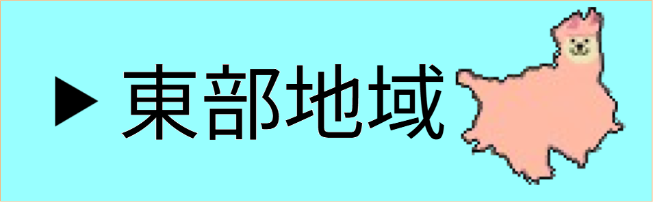
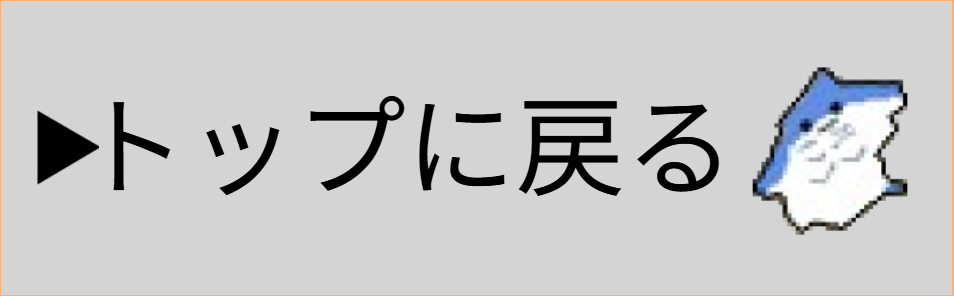
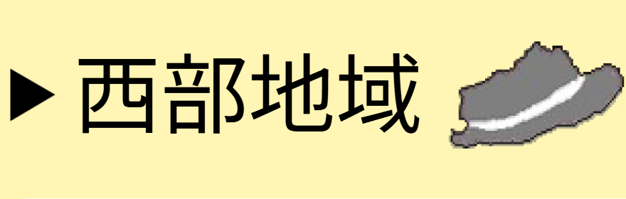
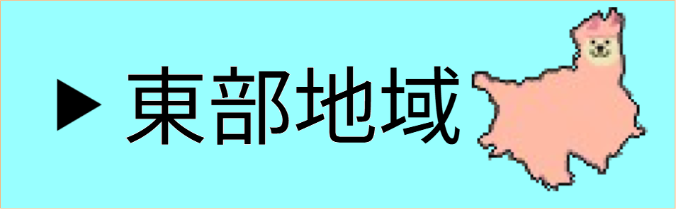
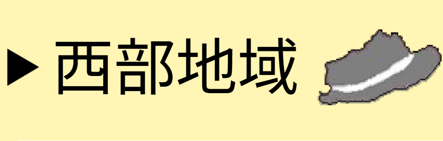
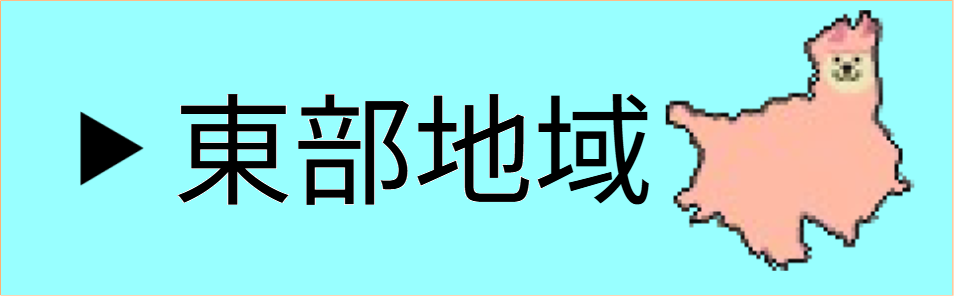
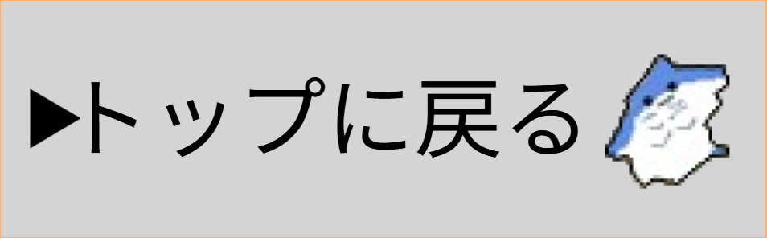
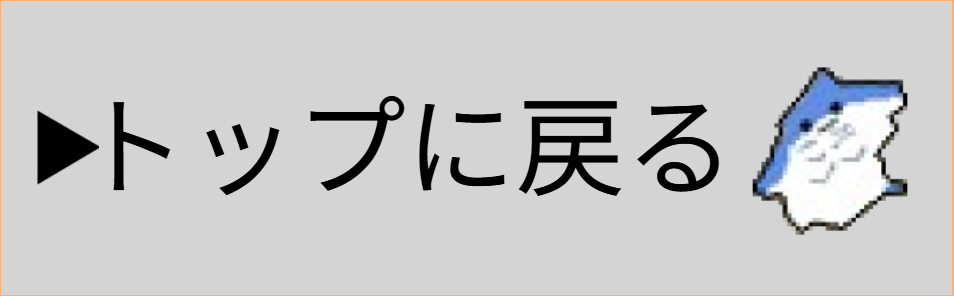

・キャラクターから市町村あてクイズ 中央地域・
これらのキャラクターは、どこの市町村でしょう？
キャラクターがつぶやいているヒントも参考にして考えてみてください。
画面を下にスクロールするとSAITAMAPもあります！
キャラクターをクリックすると、答えがわかります。
地図の切替

©2025 HAKUSHU KASSAI TAMAGERU SAITAMAP All rights reserved.


 





 
